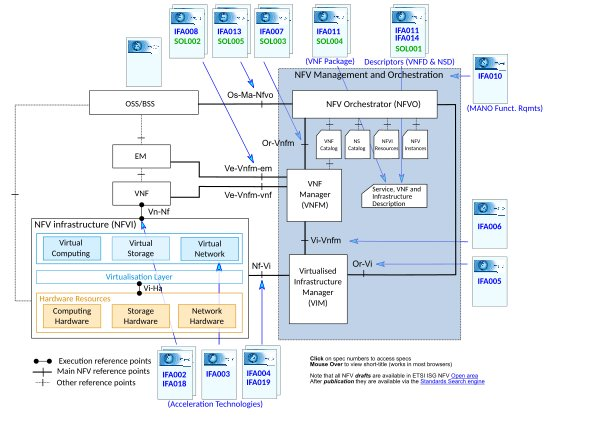

1. O que é NFV
Com o gradativo aumento das redes de comunicação, tornou-se cada vez mais necessária a adoção de medidas para diminuição de custos
de equipamento e manutenção. Dentre as soluções propostas ao problema tem-se a Virtualização das Funções de Rede (NFV - Network Function Virtualization), que sugere a criação de softwares que substituam os equipamentos de funções de rede. Tais hardwares virtualizados (como de criptografia, DNS, Firewalls, dentre outros) se encontram na nuvem em máquinas virtuais, que ao contrário dos equipamentos que eles substituem, são relativamente mais baratos e de fácil manuseio, por de serem constituídos apenas de switches, bancos de dados e servidores. Além disso, o NFV facilita a expansão da rede, pois a cada upgrade ou adição de funcionalidades de uma operadora, os processos de instalação e manutenção eram demorados, além de serem limitados a um espaço físico, tendo em vista o tamanho dos equipamentos.
1.1 Arquitetura

- NFVI (Infraestrutura de NFV): Provê os recursos necessários para a execução das VNFs, usando o hardware presente no cluster de computadores
(Processadores, RAM, Discos e Interfaces de Rede) e uma camada de Virtualização para criar os correspondentes componentes virtualizados.
- VNFs: São a unidade central de trabalho de um sistema NFV; é a implementação virtualizada de uma função de rede que pode ser executada numa
NFVI. Elas podem, em teoria, executar qualquer função previamente gerenciada por hardware específico na rede, como por ex.: roteadores, switches e firewalls.
- EM: Geralmente acompanham as VNFs, gerenciando as funções da VNF (FCAPS: Fault, Configuration, Accounting, Performance and Security).
- NFV M&O (Orquestrador e Gerenciador de NFV): É o módulo que gerencia e orquestra os recursos usados num sistema NFV através do submódulo
VIM (Virtualized Infrastructure Manager) e também os próprios serviços de rede oferecidos pelas VNFs, por meio do submódulo VNFM (VNF Manager).
1.2 Requisitos
- Tecnologias da Computação em Nuvem: A implantação de um sistema NFV só é plausível graças aos equipamentos de alta
qualidade que vieram junto com a Computação de Nuvem. Dentre eles temos switches Ethernet para possibilitar o tráfego de informação entre máquinas virtuais e interfaces físicas; processamento de pacotes de alto-desempenho, possível graças a CPUs de alta velocidade e de múltiplos cores somados à bandas de comunicação com alta taxa de transmissão.
Além disso, a Computação em Nuvem contribui com métodos de otimização de recursos computacionais, que conseguem associar aplicações virtuais diretamente aos núcleos de CPU, memórias e interfaces corretas, além da reinicialização de máquinas virtuais defeituosas.
Por fim, a existência de APIs para controle de informações como o OpenFlow, OpenStack e o OpenNaaS, adicionam mais um grau de integração de tecnologias NFV.
- Servidores de Alta Capacidade: A fim de suportar a grande quantidade de funções e clientes numa mesma rede, é preciso que estejam disponíveis
servidores de alta qualidade, que além de conseguirem aguentar a carga do sistema, devem possuir componentes de padrão da indústria de mais alto nível, como por
exemplo a arquitetura x86.
2. Mudança no cenário de telecomunicações
NFV é uma tecnologia que pode ser aplicada a qualquer manipulação de pacotes e planos de dados, com isso, as operadoras de internet têm feito
testes e começado a implantar essa infraestrutura. Dessa forma é possível suprir as demandas dos consumidores diminuindo a infraestrutura necessária.
A implementação desse processo requer qualificação de mão de obra, para que os funcionários estejam aptos a controlar os novos sistemas. Assim
o sistema se torna mais automatizado, reduzindo as operações manuais que, consequentemente, beneficia financeiramente as empresas.
As economias necessárias para investir em funcionalidades baseadas em hardware agora estão sendo desviadas para tecnologias que a longo prazo
diminui os custos, além de permitir que com NFV novas evoluções sejam desenvolvidas no setor, utilizando a nova estrutura programável. A agilidade permitida
pelo NFV abre espaço para inovações em redes e serviços, incentivando o surgimento de pesquisas e estudos pela academia.
A mudança de equipamentos físicos para software causa uma mudança no panorama fornecedor de tecnologias. Alguns têm alterado o hardware para
componentes combinados com softwares proprietários e permitindo que seus softwares proprietários sejam executados em hardwares padronizados, já que nesses
casos, a complexidade da estrutura foi transferida para o software e as empresas pretendem reutilizar equipamentos ou utilizar equipamentos padronizados para
minimizar os gastos.
Consequentemente, o desafio das operadoras é migrar suas operações para um ambiente baseado em software, estudando as possibilidades de reutilização
de sistemas e processos já existentes, minimizando o impacto que essa transformação causa em relação à troca de tecnologia e mão de obra qualificada. No Brasil,
o processo vem acontecendo gradativamente, porém as operadoras continuam cautelosas. É importante entender que já existe previsões para o lançamento dessas
tecnologias, porque elas entendem sua necessidade em um futuro próximo devido ao crescimento da demanda de dados, e já estão sendo feito estudos em etapas
pré-comerciais.
3. Benefícios
A aplicação do NFV acrescenta muitos benefícios, contribuindo para uma grande mudança no cenário das indústrias de telecomunicações.
Um deles é a redução dos custos de equipamentos, reduzindo o gasto com hardware e facilitando a implantação de novos serviços, além de
melhorar a eficiência e o desempenho da rede. A velocidade de serviço é melhorada alterando remotamente o software sem precisar de visitas
ao site para instalar o novo hardware.
O NFV também otimiza as configurações de rede em tempo real com base nos padrões atuais de tráfego e demanda de serviço. Os serviços de rede podem ser
controlados de forma centralizada, implantados dinamicamente na rede para atender as necessidades de cada aplicação sob medida. Os serviços
podem ser ampliados ou reduzidos de acordo com as necessidades, possibilitando diminuir o número de servidores em operação fora dos horários de pico,
concentrando a carga de trabalho em um número menor de servidores.
Também reduz o consumo de energia através de recursos de gerenciamento de energia em servidores. Além de que, com a flexibilização da carga de trabalho,
é possível controlar o uso de servidores necessários, o que possibilita economizar energia durante a noite, por exemplo.
Apresenta maior velocidade de tempo de lançamento no mercado, minimizando o ciclo de inovação das tecnologias de rede, proporcionando a evolução de novos
recursos. É possível executar instalações e testar referências na mesma infraestrutura, oferecendo uma integração mais eficiente, reduzindo os custos de
desenvolvimento e o tempo para levar à prática no mercado.
Ele permite que as operadoras forneçam serviço personalizado e conectividade para usuários, aplicativos, sistemas internos ou outras operadoras de rede,
compartilhando o mesmo hardware e oferecendo uma separação segura através do software. Com essa flexibilidade, é possível definir zonas de segurança,
isolar elementos de rede comprometidos e impedir propagação de malware de forma mais simples, através do gerenciamento proporcionado pela virtualização.
5. Conceitos relacionados
- Cloud Computing:
- Software Defined Networking (SDN):
- Como Cloud Computing, SDN e NFV se relacionam: